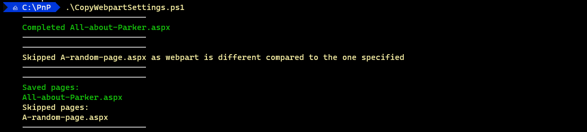

Copy custom SPFx web part settings from one page to other pages
Summary
Say we have lots of pages with a custom SPFx web part in the same location (section, column, order).
If that web part needs to updated on all such pages then we can use this script.
We simply need to update the web part in one page.
After that we can use this script to copy those updates on to other pages.
While using this script, we input the link of the page where the web part was updated (this page acts like the template page).
We then specify the section, column and order of where the web part is.
After that we specify the section, column and order of where the web part is on the destination pages i.e. the pages where the web part needs to be updated.

# The site where the web parts are present
# TODO: Enter value
$siteUrl = "";
# The Id of the webpart - see manifest
# TODO: Enter value
$webpartId = ""; # e.g. 544c1372-42df-47c3-94d6-017428cd2baf
# The name of the page where the web part properties have been updated
# TODO: Enter value
$sourcePageName = ""; #e.g. page-1.aspx
# The section where the web part is present in the source page
# TODO: Change value
$sourceWebpartSectionNumber = 0;
# The coulmn in the section where the web part is present in the source page
# TODO: Change value
$sourceWebpartColumnNumber = 0;
# The order of the web part in the column in the source page
# TODO: Change value
$sourceWebpartOrderNumber = 0;
# The names of the pages where the web part properties need to be updated
# TODO: Enter values
$destinationPageNames = @(
"", # e.g. page-2.aspx
"" # e.g. page-3.aspx
);
# The section where the web part is present in the destination pages
# TODO: Change value
$destinationWebpartSectionNumber = 0;
# The coulmn in the section where the web part is present in the destination pages
# TODO: Change value
$destinationWebpartColumnNumber = 0;
# The order of the web part in the column in the destination pages
# TODO: Change value
$destinationWebpartOrderNumber = 0;
# Arrays to store results
$savedPages = @();
$skippedPages = @();
# Functions
function Get-WebpartSettings {
param(
[string]$pageName,
[int]$sectionNumber,
[int]$columnNumber,
[int]$controlNumber
)
$page = Get-PnPPage $pageName;
if ($null -eq $page) {
Write-Error " Page doesn't exist. Please check the page name.";
return $null;
}
# Change the below based on the type of the webpart
# as not all web parts will have settings in `PropertiesJson`
# * Add null checks for section and column if needed
return $page.Sections[$sectionNumber].Columns[$columnNumber].Controls[$controlNumber].PropertiesJson;
};
function Update-WebpartSettings {
param(
[string]$pageName,
[int]$sectionNumber,
[int]$columnNumber,
[int]$controlNumber,
[string]$webPartId,
$webPartProps
)
$page = Get-PnPPage $pageName;
if ($null -eq $page) {
Write-Error " Skipped $pageName as page is null.";
return $false;
}
$webPart = $page.Sections[$sectionNumber].Columns[$columnNumber].Controls[$controlNumber];
if ($null -eq $webPart) {
Write-Error " Skipped $pageName as webpart is null";
return $false;
}
if ($webPart.WebPartId -ne $webPartId) {
Write-Host " Skipped $pageName as webpart is different compared to the one specified" -ForegroundColor Yellow;
return $false;
}
# Change the below based on the type of the webpart
# as not all web parts will have settings in `PropertiesJson`
# * Add null checks for section and column if needed
$page.Sections[$sectionNumber].Columns[$columnNumber].Controls[$controlNumber].PropertiesJson = $webPartProps;
$page.Save() | Out-Null;
$page.Publish();
Write-Host " Completed $pageName" -ForegroundColor Green;
return $true;
}
# End functions
# Start
if ($null -ne $env:PNPPSSITE) {
Disconnect-PnPOnline;
}
Connect-PnPOnline $siteUrl -UseWebLogin;
# If there is an error in the connection then exit
if ($null -eq $env:PNPPSSITE) {
Write-Error "Not proceeding as there was an error in connecting to the site.";
exit;
}
$sourceWebPartProps = Get-WebpartSettings `
-pageName $sourcePageName `
-sectionNumber $sourceWebpartSectionNumber `
-columnNumber $sourceWebpartColumnNumber `
-controlNumber $sourceWebpartOrderNumber `;
if ($null -eq $sourceWebPartProps) {
Write-Error "Not proceeding as source webpart or it's properties are empty.";
exit;
}
$destinationPageNames | ForEach-Object {
$destinationPageName = $_;
Write-Host " -------------------------- " -ForegroundColor White;
$destinationWebPartUpdated = Update-WebpartSettings `
-pageName $destinationPageName `
-sectionNumber $destinationWebpartSectionNumber `
-columnNumber $destinationWebpartColumnNumber `
-controlNumber $destinationWebpartOrderNumber `
-webPartId $webpartId `
-webPartProps $sourceWebPartProps;
Write-Host " -------------------------- " -ForegroundColor White;
if ($destinationWebPartUpdated) {
$savedPages += $destinationPageName;
}
else {
$skippedPages += $destinationPageName;
}
}
Write-Host " -------------------------- " -ForegroundColor White;
Write-Host " Saved pages:" -ForegroundColor Green;
$savedPages | ForEach-Object {
Write-Host " $_" -ForegroundColor Green;
};
Write-Host " Skipped pages:" -ForegroundColor Yellow;
$skippedPages | ForEach-Object {
Write-Host " $_" -ForegroundColor Yellow;
};
Write-Host " -------------------------- " -ForegroundColor White;
Disconnect-PnPOnline;
# End
Check out the PnP PowerShell to learn more at: https://aka.ms/pnp/powershell
Important changes coming to the way you login into PnP PowerShell (effective 9th September 2024) see Changes in PnP Management Shell registration in Microsoft 365
Contributors
| Author(s) |
|---|
| Anoop Tatti |
Disclaimer
THESE SAMPLES ARE PROVIDED AS IS WITHOUT WARRANTY OF ANY KIND, EITHER EXPRESS OR IMPLIED, INCLUDING ANY IMPLIED WARRANTIES OF FITNESS FOR A PARTICULAR PURPOSE, MERCHANTABILITY, OR NON-INFRINGEMENT.